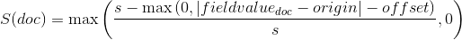

Compound queriesedit
Compound queries wrap other compound or leaf queries, either to combine their results and scores, to change their behaviour, or to switch from query to filter context.
The queries in this group are:
-
boolquery -
The default query for combining multiple leaf or compound query clauses, as
must,should,must_not, orfilterclauses. Themustandshouldclauses have their scores combined — the more matching clauses, the better — while themust_notandfilterclauses are executed in filter context. -
boostingquery -
Return documents which match a
positivequery, but reduce the score of documents which also match anegativequery. -
constant_scorequery -
A query which wraps another query, but executes it in filter context. All
matching documents are given the same “constant”
_score. -
dis_maxquery -
A query which accepts multiple queries, and returns any documents which match
any of the query clauses. While the
boolquery combines the scores from all matching queries, thedis_maxquery uses the score of the single best- matching query clause. -
function_scorequery - Modify the scores returned by the main query with functions to take into account factors like popularity, recency, distance, or custom algorithms implemented with scripting.
Boolean queryedit
A query that matches documents matching boolean combinations of other
queries. The bool query maps to Lucene BooleanQuery. It is built using
one or more boolean clauses, each clause with a typed occurrence. The
occurrence types are:
| Occur | Description |
|---|---|
|
The clause (query) must appear in matching documents and will contribute to the score. |
|
The clause (query) must appear in matching documents. However unlike
|
|
The clause (query) should appear in the matching document. |
|
The clause (query) must not appear in the matching
documents. Clauses are executed in filter context meaning
that scoring is ignored and clauses are considered for caching. Because scoring is
ignored, a score of |
The bool query takes a more-matches-is-better approach, so the score from
each matching must or should clause will be added together to provide the
final _score for each document.
POST _search
{
"query": {
"bool" : {
"must" : {
"term" : { "user.id" : "kimchy" }
},
"filter": {
"term" : { "tags" : "production" }
},
"must_not" : {
"range" : {
"age" : { "gte" : 10, "lte" : 20 }
}
},
"should" : [
{ "term" : { "tags" : "env1" } },
{ "term" : { "tags" : "deployed" } }
],
"minimum_should_match" : 1,
"boost" : 1.0
}
}
}
Using minimum_should_matchedit
You can use the minimum_should_match parameter to specify the number or
percentage of should clauses returned documents must match.
If the bool query includes at least one should clause and no must or
filter clauses, the default value is 1.
Otherwise, the default value is 0.
For other valid values, see the
minimum_should_match parameter.
Scoring with bool.filteredit
Queries specified under the filter element have no effect on scoring — scores are returned as 0. Scores are only affected by the query that has
been specified. For instance, all three of the following queries return
all documents where the status field contains the term active.
This first query assigns a score of 0 to all documents, as no scoring
query has been specified:
GET _search
{
"query": {
"bool": {
"filter": {
"term": {
"status": "active"
}
}
}
}
}
This bool query has a match_all query, which assigns a score of 1.0 to
all documents.
GET _search
{
"query": {
"bool": {
"must": {
"match_all": {}
},
"filter": {
"term": {
"status": "active"
}
}
}
}
}
This constant_score query behaves in exactly the same way as the second example above.
The constant_score query assigns a score of 1.0 to all documents matched
by the filter.
GET _search
{
"query": {
"constant_score": {
"filter": {
"term": {
"status": "active"
}
}
}
}
}
Named queriesedit
Each query accepts a _name in its top level definition. You can use named
queries to track which queries matched returned documents. If named queries are
used, the response includes a matched_queries property for each hit.
GET /_search
{
"query": {
"bool": {
"should": [
{ "match": { "name.first": { "query": "shay", "_name": "first" } } },
{ "match": { "name.last": { "query": "banon", "_name": "last" } } }
],
"filter": {
"terms": {
"name.last": [ "banon", "kimchy" ],
"_name": "test"
}
}
}
}
}
Boosting queryedit
Returns documents matching a positive query while reducing the
relevance score of documents that also match a
negative query.
You can use the boosting query to demote certain documents without
excluding them from the search results.
Example requestedit
GET /_search
{
"query": {
"boosting": {
"positive": {
"term": {
"text": "apple"
}
},
"negative": {
"term": {
"text": "pie tart fruit crumble tree"
}
},
"negative_boost": 0.5
}
}
}
Top-level parameters for boostingedit
-
positive - (Required, query object) Query you wish to run. Any returned documents must match this query.
-
negative -
(Required, query object) Query used to decrease the relevance score of matching documents.
If a returned document matches the
positivequery and this query, theboostingquery calculates the final relevance score for the document as follows:-
Take the original relevance score from the
positivequery. -
Multiply the score by the
negative_boostvalue.
-
Take the original relevance score from the
-
negative_boost -
(Required, float) Floating point number between
0and1.0used to decrease the relevance scores of documents matching thenegativequery.
Constant score queryedit
Wraps a filter query and returns every matching
document with a relevance score equal to the boost
parameter value.
GET /_search
{
"query": {
"constant_score": {
"filter": {
"term": { "user.id": "kimchy" }
},
"boost": 1.2
}
}
}
Top-level parameters for constant_scoreedit
-
filter -
(Required, query object) Filter query you wish to run. Any returned documents must match this query.
Filter queries do not calculate relevance scores. To speed up performance, Elasticsearch automatically caches frequently used filter queries.
-
boost -
(Optional, float) Floating point number used as the constant
relevance score for every document matching the
filterquery. Defaults to1.0.
Disjunction max queryedit
Returns documents matching one or more wrapped queries, called query clauses or clauses.
If a returned document matches multiple query clauses, the dis_max query
assigns the document the highest relevance score from any matching clause, plus
a tie breaking increment for any additional matching subqueries.
You can use the dis_max to search for a term in fields mapped with different
boost factors.
Example requestedit
GET /_search
{
"query": {
"dis_max": {
"queries": [
{ "term": { "title": "Quick pets" } },
{ "term": { "body": "Quick pets" } }
],
"tie_breaker": 0.7
}
}
}
Top-level parameters for dis_maxedit
-
queries - (Required, array of query objects) Contains one or more query clauses. Returned documents must match one or more of these queries. If a document matches multiple queries, Elasticsearch uses the highest relevance score.
-
tie_breaker -
(Optional, float) Floating point number between
0and1.0used to increase the relevance scores of documents matching multiple query clauses. Defaults to0.0.You can use the
tie_breakervalue to assign higher relevance scores to documents that contain the same term in multiple fields than documents that contain this term in only the best of those multiple fields, without confusing this with the better case of two different terms in the multiple fields.If a document matches multiple clauses, the
dis_maxquery calculates the relevance score for the document as follows:- Take the relevance score from a matching clause with the highest score.
-
Multiply the score from any other matching clauses by the
tie_breakervalue. - Add the highest score to the multiplied scores.
If the
tie_breakervalue is greater than0.0, all matching clauses count, but the clause with the highest score counts most.
Function score queryedit
The function_score allows you to modify the score of documents that are
retrieved by a query. This can be useful if, for example, a score
function is computationally expensive and it is sufficient to compute
the score on a filtered set of documents.
To use function_score, the user has to define a query and one or
more functions, that compute a new score for each document returned
by the query.
function_score can be used with only one function like this:
GET /_search
{
"query": {
"function_score": {
"query": { "match_all": {} },
"boost": "5",
"random_score": {},
"boost_mode": "multiply"
}
}
}
|
See Function score for a list of supported functions. |
Furthermore, several functions can be combined. In this case one can optionally choose to apply the function only if a document matches a given filtering query
GET /_search
{
"query": {
"function_score": {
"query": { "match_all": {} },
"boost": "5",
"functions": [
{
"filter": { "match": { "test": "bar" } },
"random_score": {},
"weight": 23
},
{
"filter": { "match": { "test": "cat" } },
"weight": 42
}
],
"max_boost": 42,
"score_mode": "max",
"boost_mode": "multiply",
"min_score": 42
}
}
}
|
Boost for the whole query. |
|
|
See Function score for a list of supported functions. |
The scores produced by the filtering query of each function do not matter.
If no filter is given with a function this is equivalent to specifying
"match_all": {}
First, each document is scored by the defined functions. The parameter
score_mode specifies how the computed scores are combined:
|
|
scores are multiplied (default) |
|
|
scores are summed |
|
|
scores are averaged |
|
|
the first function that has a matching filter is applied |
|
|
maximum score is used |
|
|
minimum score is used |
Because scores can be on different scales (for example, between 0 and 1 for decay functions but arbitrary for field_value_factor) and also
because sometimes a different impact of functions on the score is desirable, the score of each function can be adjusted with a user defined
weight. The weight can be defined per function in the functions array (example above) and is multiplied with the score computed by
the respective function.
If weight is given without any other function declaration, weight acts as a function that simply returns the weight.
In case score_mode is set to avg the individual scores will be combined by a weighted average.
For example, if two functions return score 1 and 2 and their respective weights are 3 and 4, then their scores will be combined as
(1*3+2*4)/(3+4) and not (1*3+2*4)/2.
The new score can be restricted to not exceed a certain limit by setting
the max_boost parameter. The default for max_boost is FLT_MAX.
The newly computed score is combined with the score of the
query. The parameter boost_mode defines how:
|
|
query score and function score is multiplied (default) |
|
|
only function score is used, the query score is ignored |
|
|
query score and function score are added |
|
|
average |
|
|
max of query score and function score |
|
|
min of query score and function score |
By default, modifying the score does not change which documents match. To exclude
documents that do not meet a certain score threshold the min_score parameter can be set to the desired score threshold.
For min_score to work, all documents returned by the query need to be scored and then filtered out one by one.
The function_score query provides several types of score functions.
-
script_score -
weight -
random_score -
field_value_factor -
decay functions:
gauss,linear,exp
Script scoreedit
The script_score function allows you to wrap another query and customize
the scoring of it optionally with a computation derived from other numeric
field values in the doc using a script expression. Here is a
simple sample:
GET /_search
{
"query": {
"function_score": {
"query": {
"match": { "message": "elasticsearch" }
},
"script_score": {
"script": {
"source": "Math.log(2 + doc['my-int'].value)"
}
}
}
}
}
In Elasticsearch, all document scores are positive 32-bit floating point numbers.
If the script_score function produces a score with greater precision, it is
converted to the nearest 32-bit float.
Similarly, scores must be non-negative. Otherwise, Elasticsearch returns an error.
On top of the different scripting field values and expression, the
_score script parameter can be used to retrieve the score based on the
wrapped query.
Scripts compilation is cached for faster execution. If the script has parameters that it needs to take into account, it is preferable to reuse the same script, and provide parameters to it:
GET /_search
{
"query": {
"function_score": {
"query": {
"match": { "message": "elasticsearch" }
},
"script_score": {
"script": {
"params": {
"a": 5,
"b": 1.2
},
"source": "params.a / Math.pow(params.b, doc['my-int'].value)"
}
}
}
}
}
Note that unlike the custom_score query, the
score of the query is multiplied with the result of the script scoring. If
you wish to inhibit this, set "boost_mode": "replace"
Weightedit
The weight score allows you to multiply the score by the provided
weight. This can sometimes be desired since boost value set on
specific queries gets normalized, while for this score function it does
not. The number value is of type float.
"weight" : number
Randomedit
The random_score generates scores that are uniformly distributed from 0 up to
but not including 1. By default, it uses the internal Lucene doc ids as a
source of randomness, which is very efficient but unfortunately not
reproducible since documents might be renumbered by merges.
In case you want scores to be reproducible, it is possible to provide a seed
and field. The final score will then be computed based on this seed, the
minimum value of field for the considered document and a salt that is computed
based on the index name and shard id so that documents that have the same
value but are stored in different indexes get different scores. Note that
documents that are within the same shard and have the same value for field
will however get the same score, so it is usually desirable to use a field that
has unique values for all documents. A good default choice might be to use the
_seq_no field, whose only drawback is that scores will change if the document
is updated since update operations also update the value of the _seq_no field.
It was possible to set a seed without setting a field, but this has been
deprecated as this requires loading fielddata on the _id field which consumes
a lot of memory.
GET /_search
{
"query": {
"function_score": {
"random_score": {
"seed": 10,
"field": "_seq_no"
}
}
}
}
Field Value factoredit
The field_value_factor function allows you to use a field from a document to
influence the score. It’s similar to using the script_score function, however,
it avoids the overhead of scripting. If used on a multi-valued field, only the
first value of the field is used in calculations.
As an example, imagine you have a document indexed with a numeric my-int
field and wish to influence the score of a document with this field, an example
doing so would look like:
GET /_search
{
"query": {
"function_score": {
"field_value_factor": {
"field": "my-int",
"factor": 1.2,
"modifier": "sqrt",
"missing": 1
}
}
}
}
Which will translate into the following formula for scoring:
sqrt(1.2 * doc['my-int'].value)
There are a number of options for the field_value_factor function:
|
|
Field to be extracted from the document. |
|
|
Optional factor to multiply the field value with, defaults to |
|
|
Modifier to apply to the field value, can be one of: |
| Modifier | Meaning |
|---|---|
|
Do not apply any multiplier to the field value |
|
Take the common logarithm of the field value.
Because this function will return a negative value and cause an error if used on values
between 0 and 1, it is recommended to use |
|
Add 1 to the field value and take the common logarithm |
|
Add 2 to the field value and take the common logarithm |
|
Take the natural logarithm of the field value.
Because this function will return a negative value and cause an error if used on values
between 0 and 1, it is recommended to use |
|
Add 1 to the field value and take the natural logarithm |
|
Add 2 to the field value and take the natural logarithm |
|
Square the field value (multiply it by itself) |
|
Take the square root of the field value |
|
Reciprocate the field value, same as |
-
missing - Value used if the document doesn’t have that field. The modifier and factor are still applied to it as though it were read from the document.
Scores produced by the field_value_score function must be
non-negative, otherwise an error will be thrown. The log and ln modifiers
will produce negative values if used on values between 0 and 1. Be sure to limit
the values of the field with a range filter to avoid this, or use log1p and
ln1p.
Keep in mind that taking the log() of 0, or the square root of a
negative number is an illegal operation, and an exception will be thrown. Be
sure to limit the values of the field with a range filter to avoid this, or use
log1p and ln1p.
Decay functionsedit
Decay functions score a document with a function that decays depending on the distance of a numeric field value of the document from a user given origin. This is similar to a range query, but with smooth edges instead of boxes.
To use distance scoring on a query that has numerical fields, the user
has to define an origin and a scale for each field. The origin
is needed to define the “central point” from which the distance
is calculated, and the scale to define the rate of decay. The
decay function is specified as
"DECAY_FUNCTION": {
"FIELD_NAME": {
"origin": "11, 12",
"scale": "2km",
"offset": "0km",
"decay": 0.33
}
}
|
The |
|
|
The specified field must be a numeric, date, or geo-point field. |
In the above example, the field is a geo_point and origin can
be provided in geo format. scale and offset must be given with a unit in
this case. If your field is a date field, you can set scale and offset as
days, weeks, and so on. Example:
GET /_search
{
"query": {
"function_score": {
"gauss": {
"@timestamp": {
"origin": "2013-09-17",
"scale": "10d",
"offset": "5d",
"decay": 0.5
}
}
}
}
}
|
The date format of the origin depends on the |
|
|
The |
|
|
The point of origin used for calculating distance. Must be given as a
number for numeric field, date for date fields and geo point for geo fields.
Required for geo and numeric field. For date fields the default is |
|
|
Required for all types. Defines the distance from origin + offset at which the computed
score will equal |
|
|
If an |
|
|
The |
In the first example, your documents might represents hotels and contain a geo location field. You want to compute a decay function depending on how far the hotel is from a given location. You might not immediately see what scale to choose for the gauss function, but you can say something like: "At a distance of 2km from the desired location, the score should be reduced to one third." The parameter "scale" will then be adjusted automatically to assure that the score function computes a score of 0.33 for hotels that are 2km away from the desired location.
In the second example, documents with a field value between 2013-09-12 and 2013-09-22 would get a weight of 1.0 and documents which are 15 days from that date a weight of 0.5.
Supported decay functionsedit
The DECAY_FUNCTION determines the shape of the decay:
-
gauss -
Normal decay, computed as:

where
 is computed to assure that the score takes the value
is computed to assure that the score takes the value decayat distancescalefromorigin+-offsetSee Normal decay, keyword
gaussfor graphs demonstrating the curve generated by thegaussfunction. -
exp -
Exponential decay, computed as:

where again the parameter
 is computed to assure that the score takes the value
is computed to assure that the score takes the value decayat distancescalefromorigin+-offset
See Exponential decay, keyword
expfor graphs demonstrating the curve generated by theexpfunction. -
linear -
Linear decay, computed as:
.
where again the parameter
sis computed to assure that the score takes the valuedecayat distancescalefromorigin+-offset
In contrast to the normal and exponential decay, this function actually sets the score to 0 if the field value exceeds twice the user given scale value.
For single functions the three decay functions together with their parameters can be visualized like this (the field in this example called "age"):

Multi-values fieldsedit
If a field used for computing the decay contains multiple values, per default the value closest to the origin is chosen for determining the distance.
This can be changed by setting multi_value_mode.
|
|
Distance is the minimum distance |
|
|
Distance is the maximum distance |
|
|
Distance is the average distance |
|
|
Distance is the sum of all distances |
Example:
"DECAY_FUNCTION": {
"FIELD_NAME": {
"origin": ...,
"scale": ...
},
"multi_value_mode": "avg"
}
Detailed exampleedit
Suppose you are searching for a hotel in a certain town. Your budget is limited. Also, you would like the hotel to be close to the town center, so the farther the hotel is from the desired location the less likely you are to check in.
You would like the query results that match your criterion (for example, "hotel, Nancy, non-smoker") to be scored with respect to distance to the town center and also the price.
Intuitively, you would like to define the town center as the origin and
maybe you are willing to walk 2km to the town center from the hotel.
In this case your origin for the location field is the town center
and the scale is ~2km.
If your budget is low, you would probably prefer something cheap above something expensive. For the price field, the origin would be 0 Euros and the scale depends on how much you are willing to pay, for example 20 Euros.
In this example, the fields might be called "price" for the price of the hotel and "location" for the coordinates of this hotel.
The function for price in this case would be
and for location:
Suppose you want to multiply these two functions on the original score, the request would look like this:
GET /_search
{
"query": {
"function_score": {
"functions": [
{
"gauss": {
"price": {
"origin": "0",
"scale": "20"
}
}
},
{
"gauss": {
"location": {
"origin": "11, 12",
"scale": "2km"
}
}
}
],
"query": {
"match": {
"properties": "balcony"
}
},
"score_mode": "multiply"
}
}
}
Next, we show how the computed score looks like for each of the three possible decay functions.
Normal decay, keyword gaussedit
When choosing gauss as the decay function in the above example, the
contour and surface plot of the multiplier looks like this:


Suppose your original search results matches three hotels :
- "Backback Nap"
- "Drink n Drive"
- "BnB Bellevue".
"Drink n Drive" is pretty far from your defined location (nearly 2 km) and is not too cheap (about 13 Euros) so it gets a low factor a factor of 0.56. "BnB Bellevue" and "Backback Nap" are both pretty close to the defined location but "BnB Bellevue" is cheaper, so it gets a multiplier of 0.86 whereas "Backpack Nap" gets a value of 0.66.
Exponential decay, keyword expedit
When choosing exp as the decay function in the above example, the
contour and surface plot of the multiplier looks like this:


Linear decay, keyword linearedit
When choosing linear as the decay function in the above example, the
contour and surface plot of the multiplier looks like this:


Supported fields for decay functionsedit
Only numeric, date, and geo-point fields are supported.
What if a field is missing?edit
If the numeric field is missing in the document, the function will return 1.